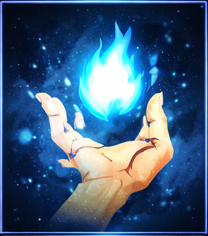
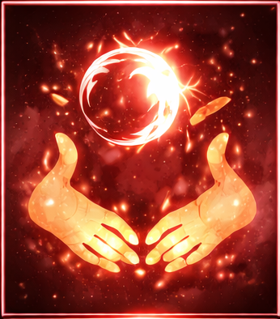
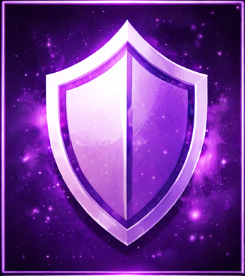

O UNIVERSO DAS MALDIÇÕES E FEITICEIROS
Em um mundo dominado por maldições, os feiticeiros jujutsu são a linha de defesa contra o sobrenatural.
PERSONAGENS
Yuji Itadori
Grau 1
Megumi Fushiguro
Grau 2
Nobara Kugisaki
Grau 2
Satoru Gojo
Especial
SISTEMA DE ENERGIA
A energia amaldiçoada é a fonte de poder dos feiiceiros.

Energia Amaldiçoada
Técnicas Jujutsu

Invocações

Barreiras
GRAUS DE PODER
A classificação das maldições e feiticeiros.
Grau 4 - Nível Baixo
Grau 3 - Risco Moderado
Grau 2 - Perigo Significativo
Grau 1 - Alto Risco
Grau Especial - Ameaça Extrema